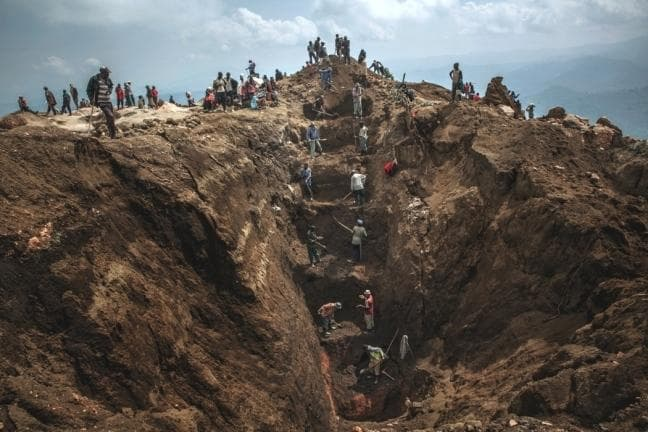
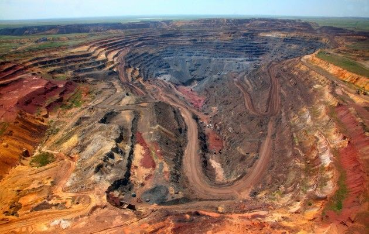

Umans condition

Coltan, a key mineral used in smartphones, laptops, and 5G technology, is primarily sourced from the Democratic Republic of the Congo (DRC), which holds about 60% of global reserves.
In 2019, 40% of the world’s coltan came from the DRC—much of it extracted under unsafe and exploitative conditions. An estimated 40,000 children and teenagers work in informal mines in the Kivu region, earning less than $2 per day. Many never attend school and are forced to dig for minerals using basic tools, without gloves or masks.
They are regularly exposed to toxic substances such as radon, which increases the risk of lung disease and cancer.
The physical toll is severe: injuries, chronic fatigue, and malnutrition are common. Girls face additional dangers, including sexual abuse and human trafficking, with limited access to protection or support.
Despite laws banning child labor and international programs meant to ensure ethical sourcing, enforcement is weak. Mine inspections are rare and often pre-announced, giving operators time to hide illegal practices. Much of the coltan enters the global market through smuggling networks, often via neighboring countries like Rwanda. Meanwhile, tech companies continue to struggle with supply chain transparency, and many cannot guarantee that their materials are free of child labor.
A stronger international effort is urgently needed through better enforcement, access to education, and greater corporate accountability to stop the exploitation at the heart of our modern technology.
In 2019, 40% of the world’s coltan came from the DRC—much of it extracted under unsafe and exploitative conditions. An estimated 40,000 children and teenagers work in informal mines in the Kivu region, earning less than $2 per day. Many never attend school and are forced to dig for minerals using basic tools, without gloves or masks.
They are regularly exposed to toxic substances such as radon, which increases the risk of lung disease and cancer.
The physical toll is severe: injuries, chronic fatigue, and malnutrition are common. Girls face additional dangers, including sexual abuse and human trafficking, with limited access to protection or support.
Despite laws banning child labor and international programs meant to ensure ethical sourcing, enforcement is weak. Mine inspections are rare and often pre-announced, giving operators time to hide illegal practices. Much of the coltan enters the global market through smuggling networks, often via neighboring countries like Rwanda. Meanwhile, tech companies continue to struggle with supply chain transparency, and many cannot guarantee that their materials are free of child labor.
A stronger international effort is urgently needed through better enforcement, access to education, and greater corporate accountability to stop the exploitation at the heart of our modern technology.
Envariomental Damage

Extensive research has linked coltan mining in the DRC to large-scale environmental degradation, with devastating consequences for the region.
The Global Forest Watch platform reveals that the DRC has lost 8.6% of its tree cover since 2000, and mining, particularly coltan extraction, is identified as a major driver of deforestation.
Disturbingly, environmental impact assessments are rarely conducted before coltan mining, leading to the violation of historical heritage sites, such as the Kahuzi Biega National Park.
Artisanal miners, lacking state control on most sites, often disregard regulations, digging deeper than recommended and causing further environmental damage. The manual process of mineral separation involves washing in streams and rivers, using chemicals that pollute water bodies and produce radioactive substances harmful to aquatic life and human health.
We also know that women and people with uteruses are often the most directly impacted by this form of pollution, as it often targets reproductive systems and impacts breast milk composition, which in turn impacts health outcomes of future generations.